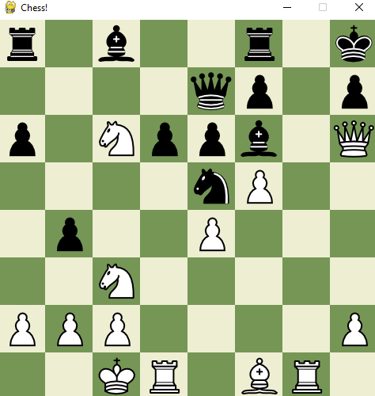

Chess Game

Suprise, Nc6! What a move!
I decided to make a simple chess game in Python using pygame.
This project uses an Object Oriented architecture where a central game object determines the rules of the game and the sub objects are for drawing in the board and pieces.
It was actually quite challenging for me to get this project off the ground. I found that, in the beginning, there was an overwhelming amount of work to do. I ended up having to refactor my code a whole lot because I wanted to change the organizational layout. I also spent a lot of time reading the documentation for pygame.
Some of the technical issues I ran into a lot were related to the Python specific shallow copy vs deep copy conundrum. I fixed this by having each class provide its own copy function.
This project helped me reinforce my OOP skills. It was a good way for me to learn how to implement the concepts I learned in classes to a bigger sized project. It also gave me an introductory experience with pygame and I learned the basic structures in the framework. In the future, I am going to look into adding machine learning to make a chess AI; I might also try implementing this project using React.
Check out the source code on github.